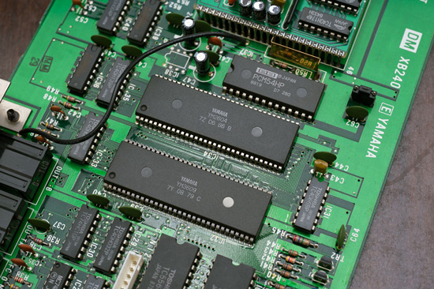
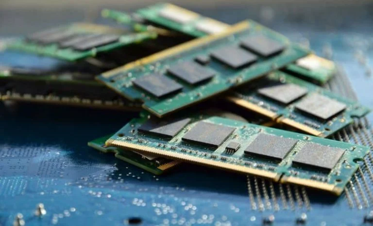
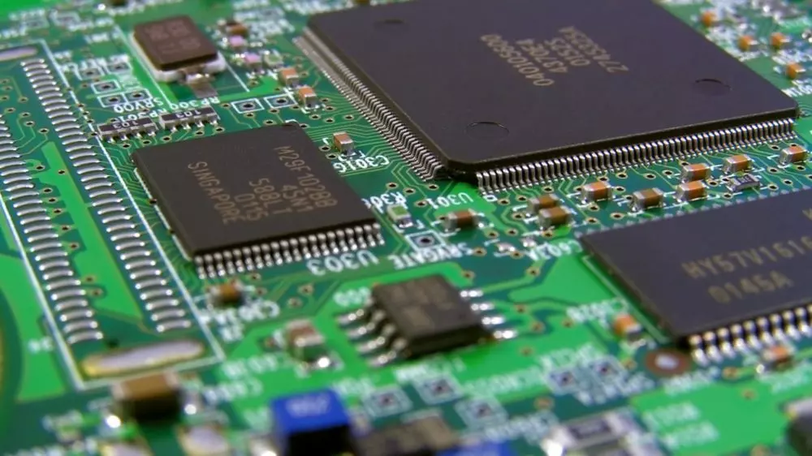
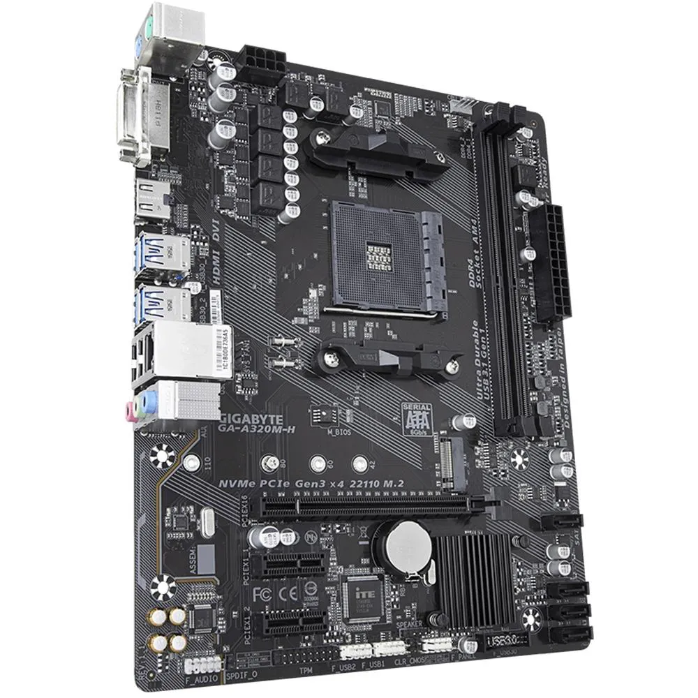

Bios
BIOS - é a sigla para Basic Input/Output System, e é um software que se encontra na placa-mãe do computador e é reposnsavel por inicializar o sistema. A BIOS não pode ser apagada mas pode ser atualizada

CPU
CPU - é a sigla para Central Processing Unit, popularmente conhecida como processador, é a parte de um sistema computacional, que realiza as instruções de um programa de computador. Seu papel pode ser comparado ao papel de um cérebro no funcionamento de um computador, realizando operações lógicas, calculando e processando dados. A CPU é composta por três componentes, ULA ou ALU, UC e Registradores.

Memória ROM
Memória ROM - sigla para Read Only Memory, é um tipo de memória que permite apenas a leitura de dados, é uma memória não volátil, significando que os dados nela permanecem armazenados mesmo quando o dispositivo é desligado.
Memória RAM
Memória RAM - sigla para Random Acess Memory, permite a leitura e escrita de arquivos, ou seja, sua função é possibilitar que o processador tenha acesso imediato aos dados que deseja, a RAM é uma memória volátil, fazendo que suas memórias são apagadas quando o dispositivo é desligado.
Memória Cache
Memória Cache, uma memória de acesso rápido que fica dentro ou perto do núcleo do processador e serve para armazenar temporariamente dados, informações e processos que são acessados frequentemente. É uma memória dividida em níveis,L1, L2 e L3, que refletem sua proximidade com a CPU, quanto mais perto dela, mais rápido o acesso.
Placa-Mãe
Placa-Mãe, é uma peça central responsável por conectar e interligar todos os componentes, como o processador, com memóri RAM, disco rígido e placa gráfica. A placa-mãe une todas as partes do sistema numa só rede de fios e serve para alimentar alguns periféricos com a energia elétrica que recebe da fonte do gabinete. Sem a placa-mãe o computador é apenas um amontoado de chips e placas independentes.
